Explora, respeta, disfruta
Rutas
Dificultad
Galeria de imagenes
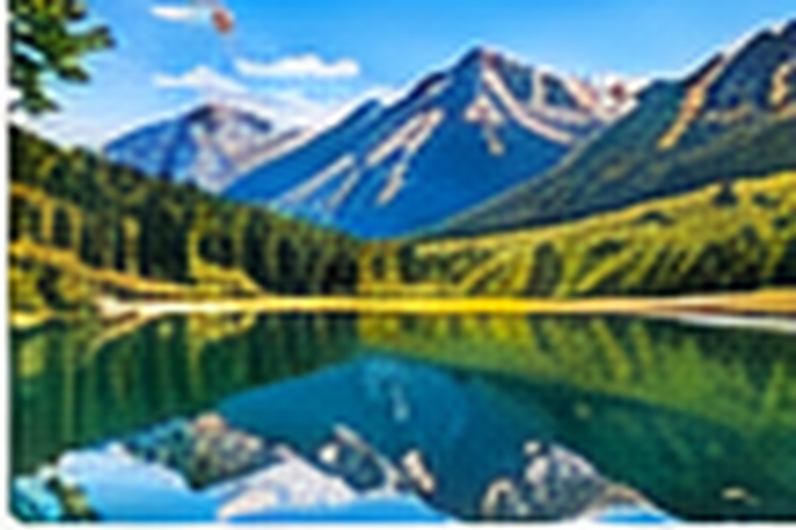
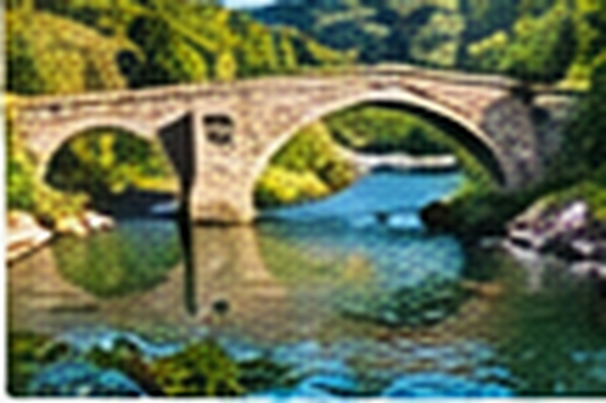
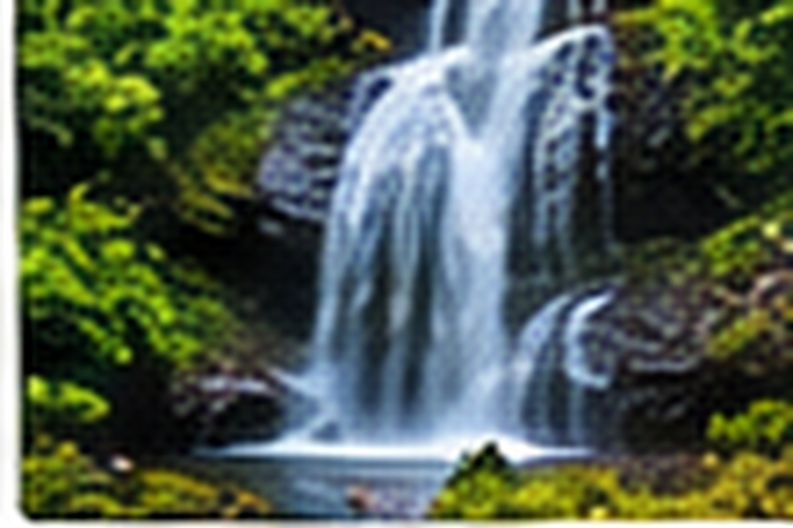
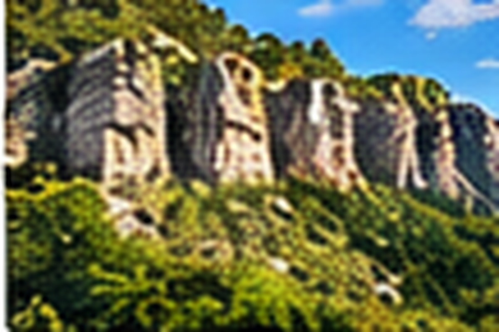
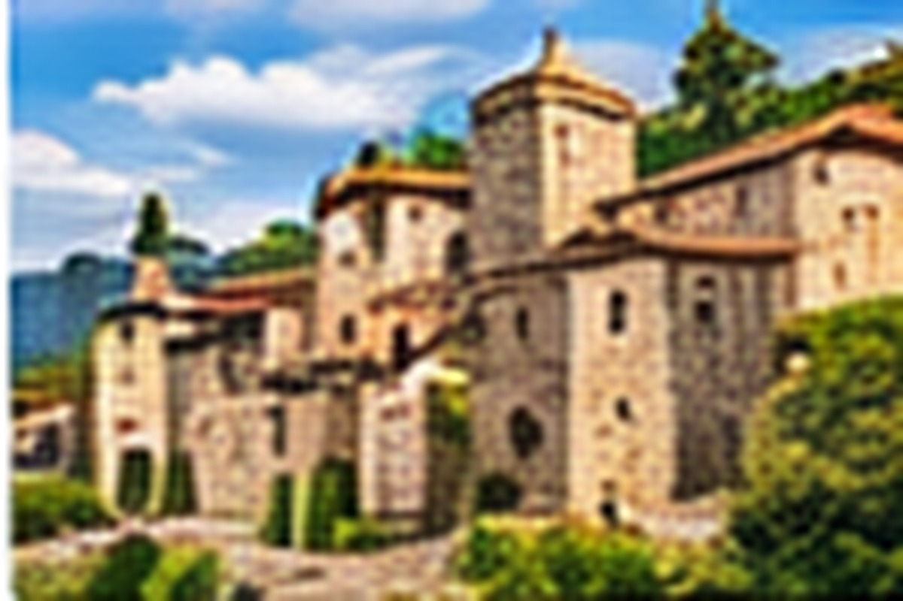
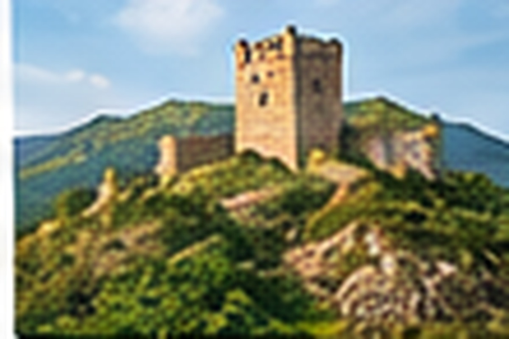
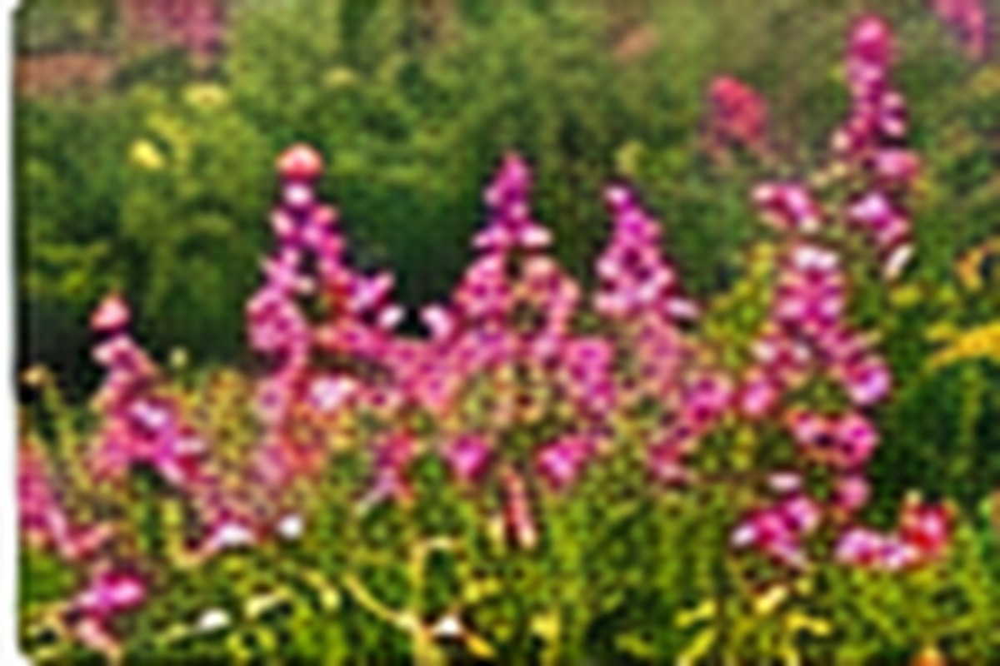
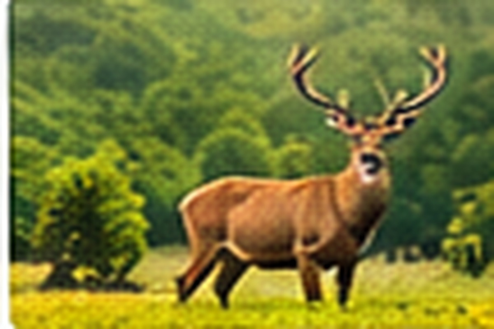
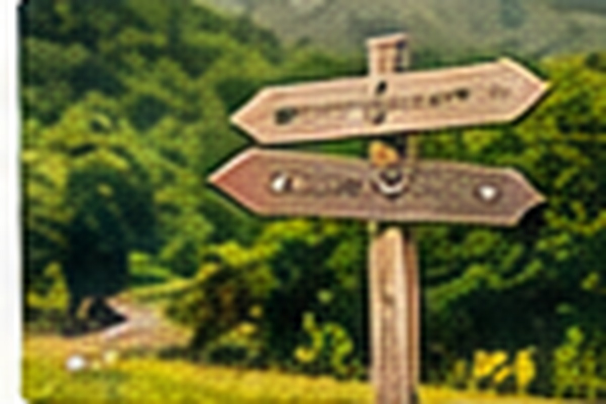
Tablas
| Distancia | Duracion | Dificultad | Desnivel | Paisaje | |
|---|---|---|---|---|---|
| 1 Km | 1 horas | Extrema | Bajo | Frondoso | |
| 2 Km | 2 horas | Extrema | Bajo | Frondoso | |
| 3 Km | 3 horas | Extrema | Bajo | Frondoso | |
| 4 Km | 4 horas | Extrema | Bajo | ||
| 5 Km | 5 horas | Extrema | Bajo | Frondoso |
Galeria Multimedia
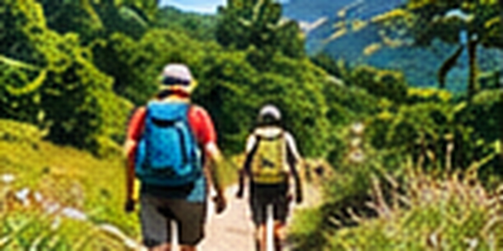
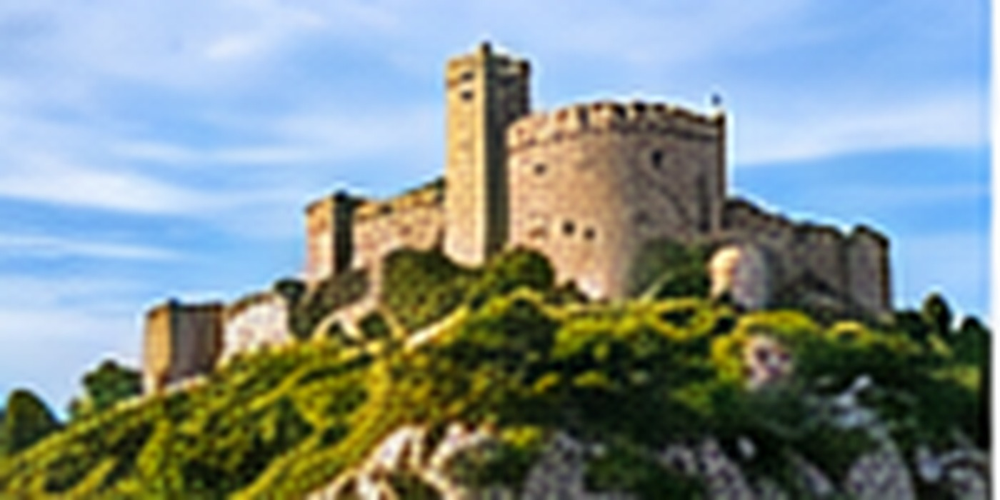
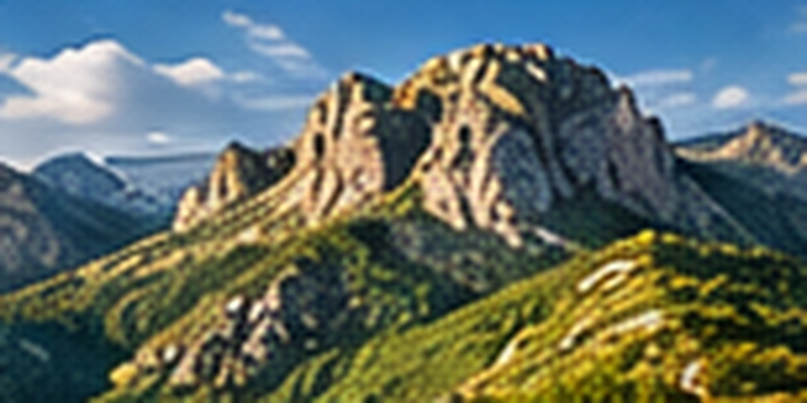
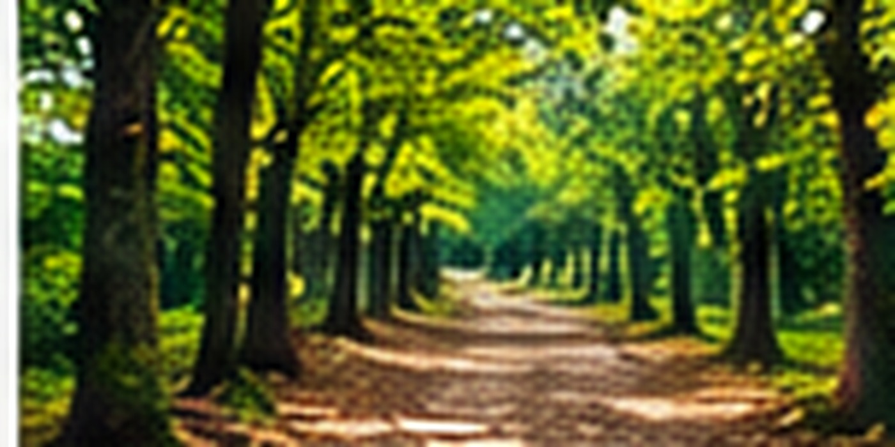
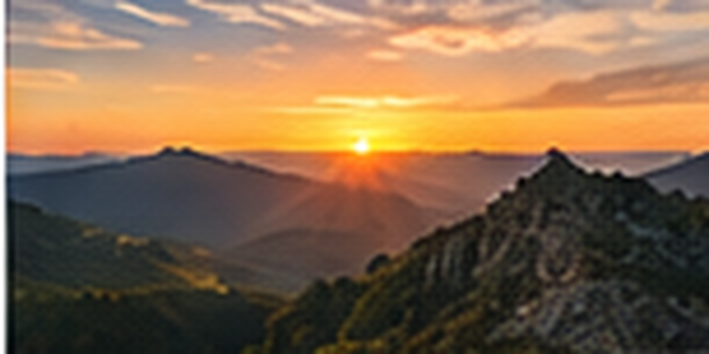